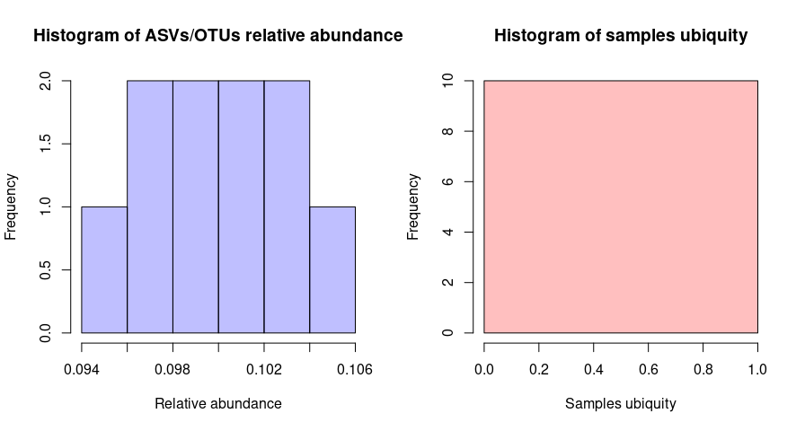

A Simple Workflow for Core Microbiota Analysis
The goal of coremicrobiota is to provide a set of functions to easily perform core microbiota analysis from an ASV/OTU table.
- First, with the function
sniffyou can rapidly get a glimpse at how many members compose your core microbiota with the given minimum relative abundance and ubiquity. - To have an idea of how to choose good values for your minimum relative abundance and ubiquity, you can make use of the
distributionfunction, which will plot two histograms of distribution of both values across your dataset. - Once, you are good to go you can now call the
core_microbiotafunction to extract ASV/OTU names composing your core microbiota (with their corresponding relative abundance across all the dataset and ubiquity if you want). - Finally, we offer you a function
core_heatmapto draw the ASVs/OTUs relative abundance across samples. - A utility function
get_core_tableis also provided to compute total counts, relative sequence abundance across all dataset and ubiquity for each ASV/OTU.
Yes, all the function can take as input a phyloseq object. When it is the case, the function core_microbiota return a phyloseq object.
This package have no external dependencies for your joy. We therefore, extensively use R Base and only few packages as suggests.
Example
This is a basic example which shows you how to solve a common problem:
library(coremicrobiota)
# Some fake data
asv_tbl <- data.frame(sample1 = 1:10, sample2 = 10:1, sample3 = 80:89)
rownames(asv_tbl) <- paste0("ASV", "_", 1:10)
# First I want to know how many ASVs/OTUs are in my microbiota given
# a certain minimum relative abundance and ubiquity
sniff(asv_tbl)
#> 10 ASVs/OTUs were found as members of the core microbiota
# How can I choose a good value for relative abundance and ubiquity?
distribution(asv_tbl)
# When I am good...
core_microbiota(asv_tbl, abundance = 0.1, ubiquity = 0.25)
#> [1] "ASV_6" "ASV_7" "ASV_8" "ASV_9" "ASV_10"
# When I am done with core microbiota analysis...
core_heatmamp(asv_tbl, asv_tbl, abundance = 0.1, ubiquity = 0.25)
# If I want a nice table to include in my paper...
get_core_table(asv_tbl)
sample1 sample2 sample3 total_counts ubiquity relative_abundance
ASV_1 1 10 80 91 1 0.09528796
ASV_2 2 9 81 92 1 0.09633508
ASV_3 3 8 82 93 1 0.09738220
ASV_4 4 7 83 94 1 0.09842932
ASV_5 5 6 84 95 1 0.09947644
ASV_6 6 5 85 96 1 0.10052356
ASV_7 7 4 86 97 1 0.10157068
ASV_8 8 3 87 98 1 0.10261780
ASV_9 9 2 88 99 1 0.10366492
ASV_10 10 1 89 100 1 0.10471204Enjoy!
Some great papers on designing a core microbiota analysis
- Neu, A.T., Allen, E.E., Roy, K., 2021. Defining and quantifying the core microbiome: Challenges and prospects. PNAS 118. https://doi.org/10.1073/pnas.2104429118
- Berg, G., Rybakova, D., Fischer, D., Cernava, T., Vergès, M.-C.C., Charles, T., Chen, X., Cocolin, L., Eversole, K., Corral, G.H., Kazou, M., Kinkel, L., Lange, L., Lima, N., Loy, A., Macklin, J.A., Maguin, E., Mauchline, T., McClure, R., Mitter, B., Ryan, M., Sarand, I., Smidt, H., Schelkle, B., Roume, H., Kiran, G.S., Selvin, J., Souza, R.S.C. de, van Overbeek, L., Singh, B.K., Wagner, M., Walsh, A., Sessitsch, A., Schloter, M., 2020. Microbiome definition re-visited: old concepts and new challenges. Microbiome 8, 103. https://doi.org/10.1186/s40168-020-00875-0
- Astudillo‐García, C., Bell, J.J., Webster, N.S., Glasl, B., Jompa, J., Montoya, J.M., Taylor, M.W., 2017. Evaluating the core microbiota in complex communities: A systematic investigation. Environ Microbiol 19, 1450–1462. https://doi.org/10.1111/1462-2920.13647